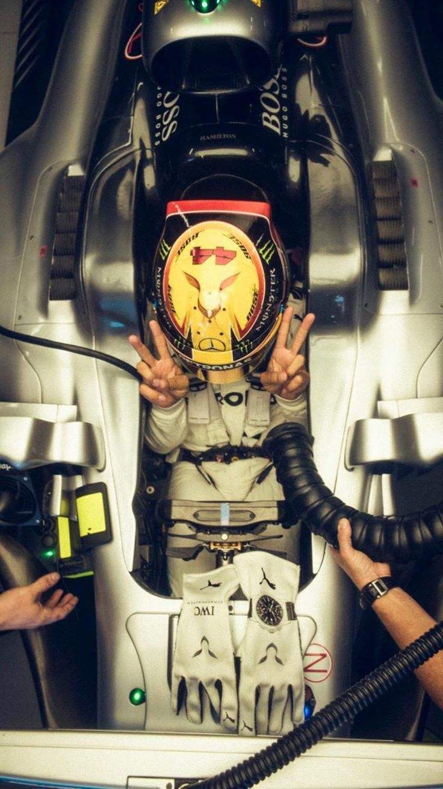
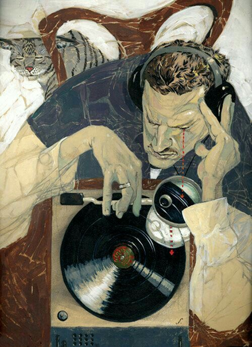
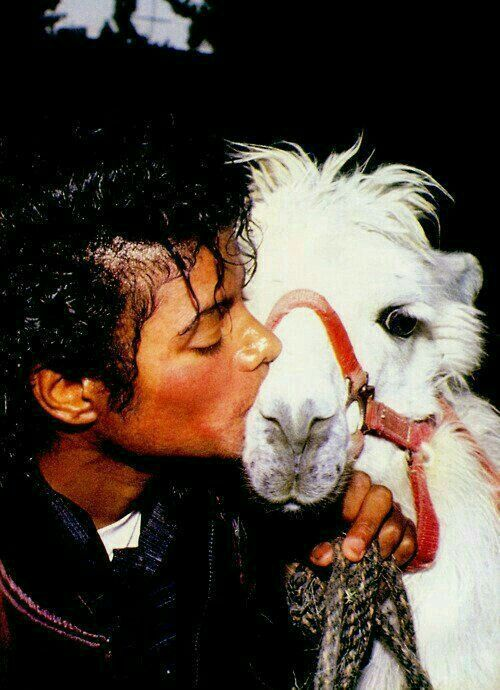
Everyone has goals, its merely impossible to not have goals, big or small. Some are more ambitious and sure, while others are still in that stage of self-doubt. It fine to be unsure; however, its not to be lazy and not try at all. Through analysis of different shows and movies, idealogies of 'successful' individuals such as Steve Jobs and Jim Carrey, symbolism of paintings, and more: this website will hopefully motivate you into discovering your authentic self and get you into a rhythm which will lead to your own personal growth.




Marty Supreme, a movie released in 2026, tells the story of Marty Mouser, played by actor Timothée Chalamet, who is selfishly determined to find success in the world of table tennis. Mouser will stop at nothing to achieve his goal, including jeopardizing himself and everyone in his vicinity.
The film is immensely stressful, as his persistent risky decisions always eventually blow up in his face and make the story 10x more complicated. Similar to Superman when everyone who watched it felt a wave of hope for humanity. Marty Supreme has that same effect, except with motivation and adrenaline instead of hope (Cecilia Arredondo).
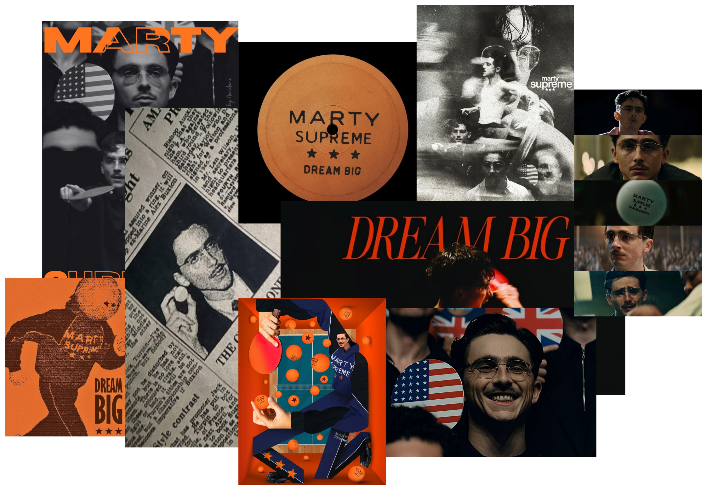
What does it mean to be great? What does it mean to be perfect? What does it mean to be the best? These are the questions that the film Whiplash, starred by actor Miles Teller, makes you think about.
Whiplash is a Thriller, but at its core, it is a cautionary tale. It is a story about how the pursuit of greatness can consume your entire life, relationships, joys, dreams, and identity. This film is about showing the purposeful and sometimes unintended negative consequences of one’s pursuit of greatness and stardom. It chooses to show how addicting and all-consuming the effort of self-improvement can get if left unchecked and/or forcefully pushed upon you by someone else. It is for these reasons that I feel that this movie became such an instant success and timeless film to look back upon. Andrew’s journey could be applied to literally any person trying to succeed in virtually any creative endeavor which makes this film a cautionary tale for all who watch it (Kai Colbert).
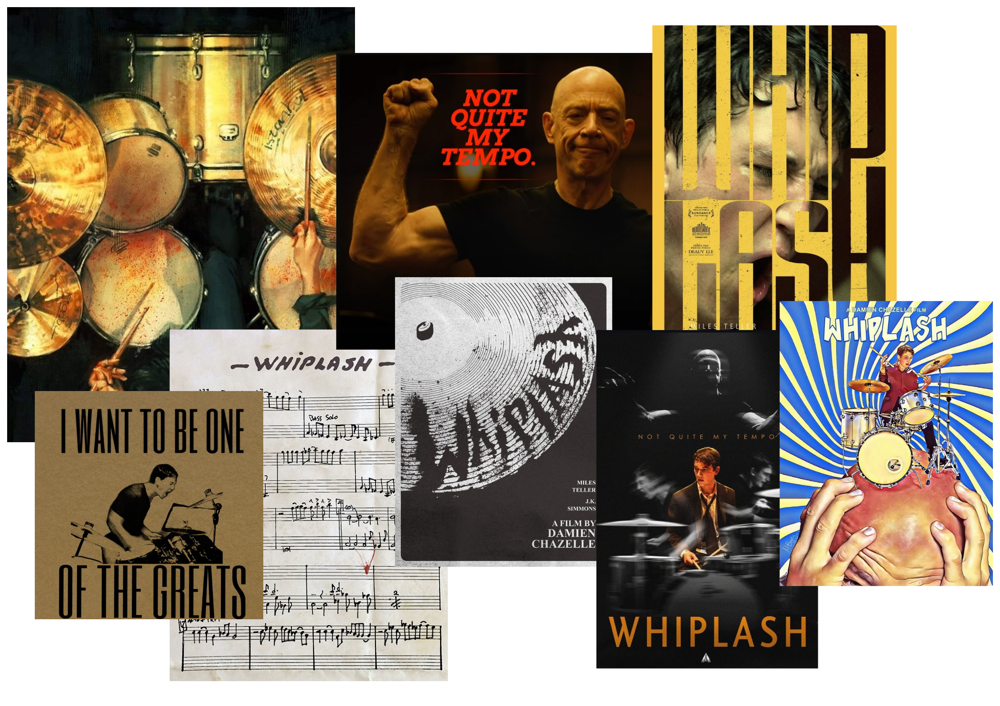

The Great Gatsbyshould be seen as a testament of what someone can accomplish just by having the sheer will to attain it. Gatsby, played by actor Leonardo Dicaprio, literally dreamed and affirmed himself into success. Everyone is capable of doing the same thing, but most are fearful or lack vision. Whats fascinating about Gatsby was his ability to accomplish what he set his sights on. Through sheer determination and motivation for the love of a woman, he was able to completely change his life, gain riches, and become a well spoken gentleman. He literally dreamed himself into massive wealth. Gatsby didn't have much, but he had two things:
1. The desire to be rich
2. Unwavering focus.
Are you still questioning whether it is possible to literally hope, want, and wish yourself into success like Gatsby? Can simply wanting something bad enough lead you to achieving it? The answer is yes, and I call it The Gatsby Effect (Alicia Glenn).
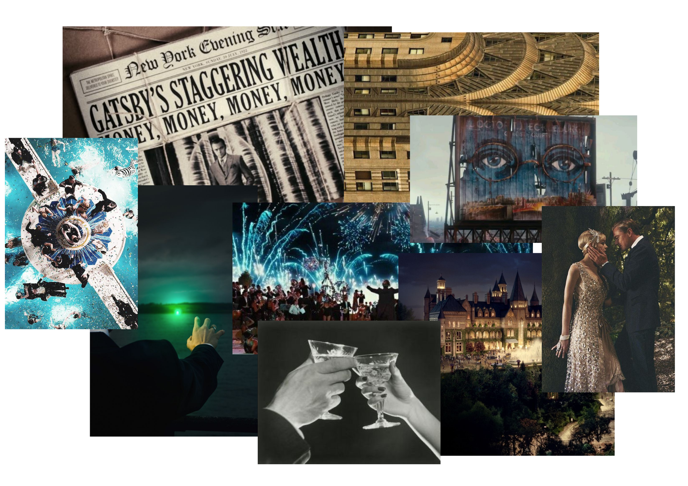
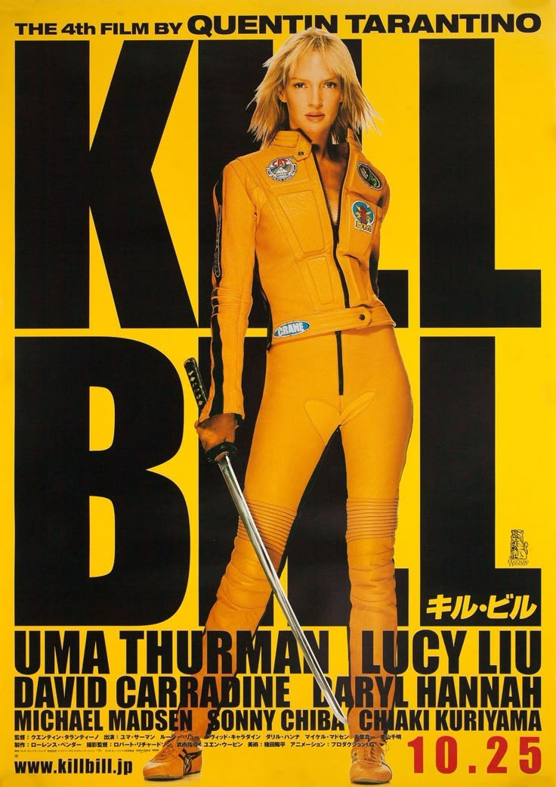
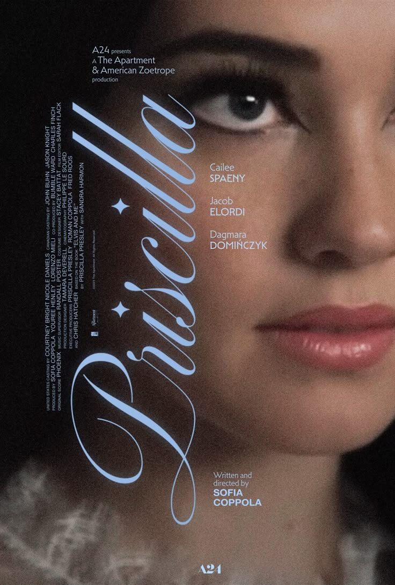
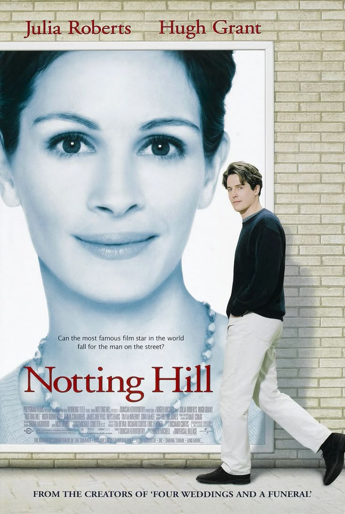
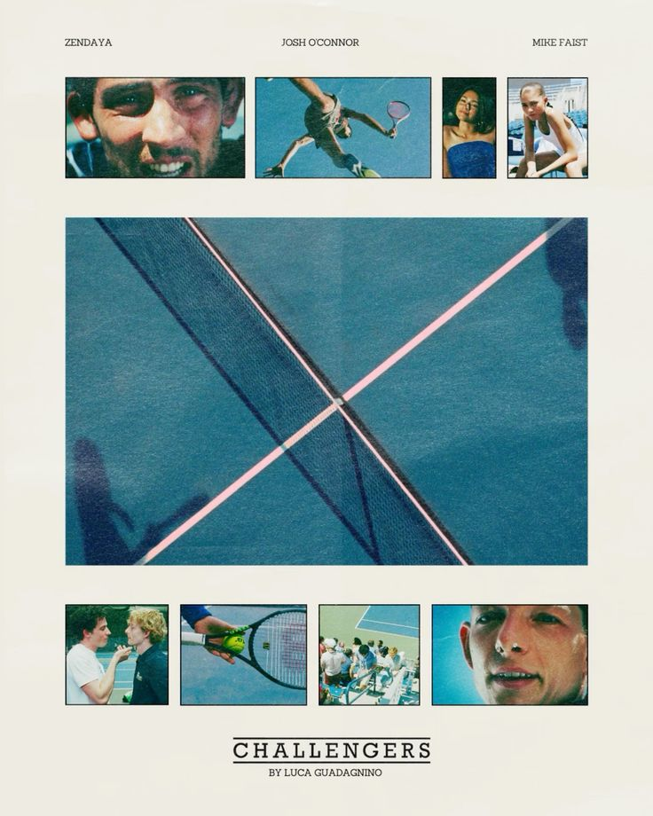
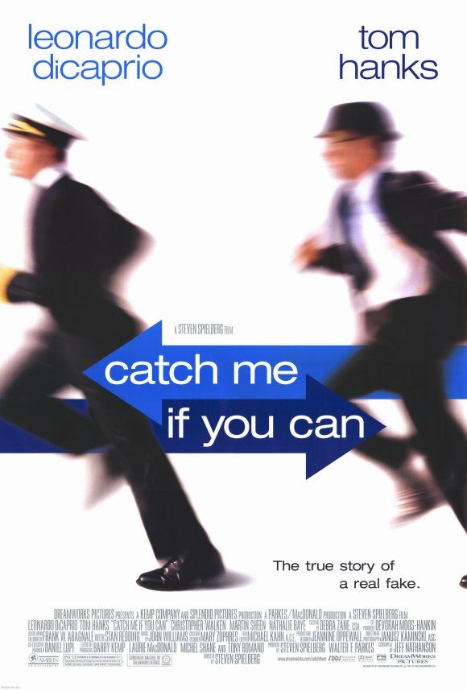
Page 27
A long time ago in a galaxy far, far away....
Naboo, Villa del Balbainello-Lake Como
Curation of the Soul
About the Author
The Grand Budapest Hotel
Dear Visitor,
Welcome to my dear website, if you are here, you must be in the stage of figuring out different parts of your life which may include what you truely want or truely like. Hopefully this page sparks some inspiration!!
With the countless websites and apps for different forms of media such as letterboxd for movies, goodreads for books, spotify for music, etc. it gets extremely tiring to switch between pages especially when one wants to connect one to another. This website will include meaningful recommendations in different forms of media which will also fall under categories of emotion and desires.
I firmly believe in comsume to create which helps many who find difficulty in knowing exactly what they long for.
You found the second page!
This unique categorization can help users save time when deciding what to watch and encourage people to explore films outside their usual genres. Furthermore, the low-overwhelm design will create a much-needed comforting safe zone for users where the internet is actually helping more than hurting for once.
This informative website is needed because it offers a creative and refreshing alternative to conventional film guides of broad labels, by introducing unique and humanized approach to film discovery, making user experience more convenient, thoughtful, and emotionally engaging.
don't forget to follow me on other platforms to stay updated on what movies I have to recommend for you next!
instagram tiktok letterboxd askdhaskdjhajd
Sincerly,
Author